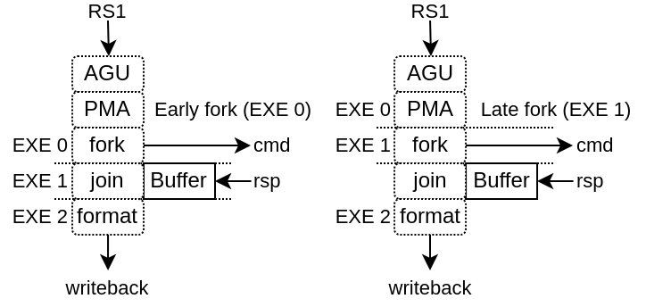

LSU / Memory
This chapter will handle things related to :
Load / Store instructions
Atomic memory instructions
Load reserve / Store conditional instructions
VexiiRiscv has currently 2 implementations for it:
LsuCachelessPlugin for microcontrollers, which doesn't implement any cache
LsuPlugin / LsuL1Plugin which can work together to implement load and store through an L1 cache
Without L1
Implemented by the LsuCachelessPlugin, it should be noted that to reach good frequencies on FPGA SoC, forking the memory request at execute stage 1 seems to provide the best results (instead of execute stage 0), as it relax the AGU timings as well as the PMA (Physical Memory Attributes) checks.
With L1
This configuration supports :
N ways (limited to 4 KB per way if the MMU is enabled)
Non-blocking design, able to handle multiple cache line refill and writeback
Hardware and software prefetching (RPT design)
This LSU implementation is partitioned between 2 plugins :
The LsuPlugin :
Implement AGU (Address Generation Unit)
Arbitrate all the different sources of memory request (AGU, store queue, prefetch, MMU refill)
Provide the memory request to the LsuL1Plugin
Bind the MMU translation port
Handle the exceptions and hazard recovery
Handle the atomic operations (ALU + locking of the given cache line)
Handle IO memory accesses
Implement the store queue to handle store misses in a non-blocking way
Feed the hardware prefetcher with load/store execution traces
The LsuL1Plugin :
Implement the L1 tags and data storage
Implement the cache line refill and writeback slots (non-blocking)
Implement the store to load bypasses
Implement the memory coherency interface
Is integrated in the execute pipeline (to save area and improve timings)
For multiple reasons (ease of implementation, FMax, hardware usage), VexiiRiscv LSU can hit hazards situations :
Cache miss, MMU miss
Refill / Writeback aliasing (4KB)
Unread data bank during load (ex : load during data bank refill)
Load which hit the store queue
Store miss while the store queue is full
...
In those situation, the LsuPlugin will trigger an "hardware trap" which will flush the pipeline and reschedule the failed instruction to the fetch unit.
Here is a set of options which can be used :
Parameter |
Description |
|---|---|
--lsu-l1 |
Enable the L1 D$ |
--lsu-l1-ways=X |
Specify the number of ways for the L1 D$ (how many direct mapped caches in parallel), default=1 |
--lsu-l1-sets=X |
Specify the number of sets for the L1 D$ (how many line of cache per way), default=64 |
--lsu-l1-mem-data-width-min=X |
Set a lower bound for the L1 D$ data width |
--lsu-software-prefetch |
Enable RISC-V CMO for software prefetching in the D$ |
--lsu-hardware-prefetch rpt |
Enable the L1 D$ hardware prefetcher (based on RPT) |
--lsu-l1-store-buffer-ops=X |
Specify how many store miss can be pushed in the store buffer (disabled/0 by default) |
--lsu-l1-store-buffer-slots=X |
Specify how many block of memory can be targeted by the store buffer (disabled/0 by default) |
--lsu-l1-refill-count=X |
Specify how many cache line refill the L1 D$ can handle at the same time, default=1 |
--lsu-l1-writeback-count=X |
Specify how many cache line writeback the L1 D$ can handle at the same time, default=1 |
To improve the performances, consider first increasing the number of cache ways to 4.
The store buffer will help a lot with the store bandwidth by allowing the CPU to not be blocked by every store miss. The hardware prefetcher will help with both store/load bandwidth (but if the store buffer is already enabled, it will not really increase the store bandwidth).
For the hardware prefetcher to stretch its leg, consider using 4 refill/writeback slots. This will also help the store buffer.
Prefetching
Currently there is two implementation of prefetching
PrefetchNextLinePlugin : As its name indicates, on each cache miss it will prefetch the next cache line
PrefetchRptPlugin : Enable prefetching for instruction which have a constant stride between accesses
PrefetchRptPlugin
This prefetcher is capable of recognizing instructions which have a constant stride between their own previous accesses in order to prefetch multiple strides ahead.
Will learn memory accesses patterns from the LsuPlugin traces
Patterns need to have a constant stride in order to be recognized
By default, it can keep track of up to 128 instructions access pattern (1 way * 128 sets, pc indexed)

This can improve performance dramatically (for some use cases). For instance, on a 100 MHz SoC in a FPGA, equipped of a 16x800 MT/s DDR3, the load bandwidth went from 112 MB/s to 449 MB/s. (sequential load)
Here is a description of the table fields :
"Tag" : Allows to get a better idea if the given instruction (PC) is the one owning the table entry by comparing more PC's MSB bits. An entry is "owned" by an instruction if its tag match the given instruction PC's msb bits.
"Address" : Previous virtual address generated by the instruction
"stride" : Number of bytes expected between memory accesses
"Score" : Allows to know if the given entry is useful or not. Each time the instruction is keeping the same stride, the score increase, else it decrease. If another instruction (with another tag) want to use an entry, the score field has to be low enough.
"Advance" : Allows to keep track how far the prefetching for the given instruction already went. This field is cleared when a entry switch to a new instruction
"Missed" : This field was added in order to reduce the spam of redundant prefetch request which were happening for load/store intensive code. For instance, for a deeply unrolled memory clear loop will generate (x16), as each store instruction PC will be tracked individually, and as each execution of a given instruction will stride over a full cache line, this will generate one hardware prefetch request on each store instruction every time, spamming the LSU pipeline with redundant requests and reducing overall performances.
This "missed" field works as following :
It is cleared when a stride disruption happens (ex new memcopy execution)
It is set on cache miss (set win over clear)
An instruction will only trigger a prefetch if it miss or if its "missed" field is already set.
For example, in a hardware simulation test (RV64, 20 cycles memory latency, 16xload loop), this addition increased the memory read memory bandwidth from 3.6 bytes/cycle to 6.8 bytes per cycle.
Note that if you want to take full advantage of this prefetcher, you need to have enough hardware refill/writeback slots in the LsuL1Plugin.
Also, prefetch which fail (ex : because of hazards in L1) aren't replayed.
The prefetcher can be turned off by setting the CSR 0x7FF bit 1.
performance measurements
Here are a few performance gain measurements done on litex with a :
quad-core RV64GC running at 200 MHz
16 KB L1 cache for each core
512 KB of l2 cache shared (128 bits data bus)
4 refill slots + 4 writeback slots + 32 entry store queue + 4 slots store queue
Test |
No prefetch |
RPT prefetch |
|---|---|---|
Litex bios read speed |
204.2MiB/s |
790.9MiB/s |
Litex bios write speed |
559.2MiB/s |
576.8MiB/s |
iperf3 RX |
617 Mbits/sec |
766 Mbits/sec |
iperf3 TX |
623 Mbits/sec |
623 Mbits/sec |
chocolate-doom -1 demo1.lmp |
43.1 fps |
50.2 fps |
Hardware Memory coherency
Hardware memory coherency, is the feature which allows multiple memory agents (ex : CPU, DMA, ...) to work on the same memory locations and notify each others when they change their contents. Without it, the CPU software would have to manually flush/invalidate their L1 caches to keep things in sync.
There is mostly 2 kinds of hardware memory coherency architecture :
By invalidation : When a CPU/DMA write some memory, it notifies the other CPU caches that they should invalidate any old copy that they have of the written memory locations. This is generally used for write-through L1 caches. This isn't what VexiiRiscv implements.
By permission : Memory blocks copies (typically 64 aligned bytes blocks which resides in L1 cache lines) can have multiple states. Some of which provide read only accesses, while others provide read/write accesses. This is generally used in write-back L1 caches, and this is what VexiiRiscv uses.
In VexiiRiscv, the hardware memory coherency (L1) with other memory agents (CPU, DMA, L2, ..) is supported though a MESI implementation which can be bridged to a tilelink memory bus.
MESI is an standard acronym for every possible state that a copy of a memory block can have in the caches :
I : Invalid, meaning that there is no copy of that memory block
S : Shared, meaning that the cache has a read only copy of the memory block, and that other caches may also have a copy. This state is sometime named : Shared/Clean
E : Exclusive, meaning that the cache has a read/writable copy of the memory block which is still in a clean state (unmodified, no writeback required), and that no other cache has a copy of the block. This state is sometime named : Unique/Clean
M : Modified, meaning that the cache line exclusive, but has been modified, and so, require a writeback later on. This state is sometime named : Unique/Dirty
Here is a diagram which shows an example of memory block copy exchanges between 2 CPUs :

The VexiiRiscv L1 cache interconnect interface is kinda close to what Tilelink specifies and can easily be bridged to Tilelink. The main difference is that probe requests can fail (need to be replayed), and that probes which which hit will then go through the writeback interface. Here is the hardware interfaces :
read_cmd : To send memory block acquire requests (invalid/shared -> shared/exclusive)
read_rsp : For responses of the above requests
read_ack : To send acquire requests completion
write_cmd : To send release a memory block permission (shared/exclusive -> invalid)
write_rsp : For responses of the above requests
probe_cmd : To receive probe requests (toInvalid/toShared/toUnique)
probe_rsp : to send responses from the above requests (isInvalid/isShared/isUnique). When data need to be written back, it will be done through the write_cmd channel.
Atomic Memory Operation
AMO stand for Atomic Memory Operations (ex : atomic swap, atomic add, ...)
Typicaly, an AMO execute the following pseudo code (ex : atomic add).
void amoadd(int *address, int add_alu) {
// Atomic section
int read_value = address[0]; // Read memory
int alu_value = read_value + add_alue; // Process data
address[0] = alu_value; // Write memory
// End of atomic section, write read_value to the register file
}
When memory coherency is enabled, here is how AMO instruction are implemented in VexiiRiscv :
AMO starts like a regular memory Load
Once it reach the last stage of the cache (execute stage 2), if there is a cache miss, or the cache line isn't in a exclusive state, the instruction fail and is retried.
If the above condition is successfull, the LSU will lock the given cache line for a few cycles, preventing any writeback. The combination of the cache line locking and exclusive state ensure that no other agent can modify the memory block while the atomic operation is done.
While the cache line is locked, the atomic ALU will process the readed value, then write the result into the cache and release the cache line lock.
Load Reserve / Store Conditional
LR stand for Load Reserve, SC stand for Store Conditional. Those two instruction work in pairs and allows to implement atomic memory operations quite differently from the AMO instruction.
The idea is:
First, the CPU attempts to load and reserve a given portion of memory via the LR instruction.
Then the CPU process the loaded data using regular integer instruction (it has a limited time to do it and a few other restrictions)
Finaly, the CPU store a modified value using the SC instruction.
The trick is that the store instruction may fail, and will fail in a few conditions :
If another memory agent wrote the reserved memory location
The CPU was too slow to process the loaded data
...
So an AMOADD could be emulated via :
void amoadd(int *address, int add_alu) {
while(1){
int read_value = LR(address); // Load Reserve
int alu_value = read_value + add_alue; // Process data
if(SC(address, alu_value) == SUCCESS) break; // Store Conditional
}
}
In VexiiRiscv, the LR / SC instruction are implemented the following way :
LR mostly behave like a regular memory load, but will require the cache line to be in a exclusive state to successed. Also, the cache line will be locked for a 32 cycles to ensure other memory agent would not remove the cache line via probes systematicaly.
SC mostly behave like a regular memory store, but will check that the lock is still active, else it will skip the memory store and notify the CPU of the failure
Also, note that if one CPU pull a memory value using LR in a for loop (this is done in a few place in the linux kernel, ex : spinlock), it shouldn't be able to refresh the lock, as this would completely prevent another CPU from acquiring the memory block. So, for this reason, VexiiRiscv does not set the reservation on a LR, but instead toggle the reservation status.
Memory system
Currently, VexiiRiscv can be used with the Tilelink memory interconnect from SpinalHDL and Chipyard (https://chipyard.readthedocs.io/en/latest/Generators/VexiiRiscv.html).
Why Tilelink
So, why using Tilelink, while most of the FPGA industry is using AXI4 ? Here are some issues / complexities that AXI4 bring with it. (Dolu1990 opinions, with the perspective of using it in FPGA, with limited manpower, don't see this as an absolute truth)
The AXI4 memory ordering, while allowing CPU/DMA to get preserved ordering between transactions with the same ID, is creating complexities and bottlenecks in the memory system. Typically in the interconnect decoders to avoid dead-locks, but even more in L2 caches and DRAM controllers which ideally would handle every request out of order. Tilelink instead specify that the CPU/DMAs shouldn't assume any memory ordering between inflight transactions.
AXI4 specifies that memory read response channel can interleave between multiple ongoing bursts. While this can be use full for very large burst (which in itself is a bad idea, see next chapter), this can lead to big area overhead for memory bridges, especially with width adapters. Tilelink doesn't allows this behavior.
AXI4 splits write address from write data, which add additional synchronizations points in the interconnect decoders/arbiters and peripherals (bad for timings) as well as potentially decrease performances when integrating multiple AXI4 modules which do not use similar address/data timings.
AXI4 isn't great for low latency memory interconnects, mostly because of the previous point.
AXI4 splits read and write channels (ar r / aw w b), which mostly double the area cost of address decoding/routing for DMA and non-coherent CPUs.
AXI4 specifies a few "low values" features which increase complexity and area (ex: WRAP/FIXED bursts, unaligned memory accesses).
Efficiency cookbook
Here are a set of design guideline to keep a memory system lean and efficient (don't see this as an absolute truth) :
Memory blocks are 64 aligned bytes long : DDR3/4/5 modules are tuned to provides native 64 bytes burst accesses (not less, not more). In particular, with DDR5 modules, they doubled the module burst size (to 16 beats), but in order to preserve 64 bytes burst accesses, they divided the 64 bits physical data width between two independent channels. CPU cache lines, L2 and L3 designs follow that 64 bytes block "rule" as well. Their coherency dictionary will be designed to handle 64 bytes memory blocks too. AMBA 5 CHI enforce 64 bytes cache lines, and doesn't support memory transfers with more than 64 bytes.
DMA should not reuse the same transaction ID (axi/tilelink) between multiple inflight transactions and should not expect any ordering between inflight transactions. That keep them highly portable and relax the memory system.
DMA should access up to 64 aligned bytes per burst, this should be enough to reach peak bandwidth. No need for 4KB Rambo bursts. Asking a system to support bursts bigger than 64 aligned bytes can lead to extra cost, as it create new ordering constraints between the memory block of the burst. For instance in a L2 cache it can lead to implementation of a reorder buffer to deal between transaction which hit/miss the cache. Adding extra complexity/area/timings to deal with. Additionally, big burst can create high latency spike for other agents (CPU/DMA).
DMA should only do burst aligned memory accesses (to keep them easily portable to Tilelink)
It is fine for DMA to over fetch (let's say you need 48 bytes, but access aligned 64 bytes instead), as long as the bulk of the memory bandwidth is not doing it.
DMA should avoid doing multiple accesses in a 64 byte block if possible, and instead use a single access. This can preserve the DRAM controller bandwidth (see DDR3/4/5 comments above), but also, L2/L3 cache designs may block any additional memory request targeting a memory block which is already under operation.
When a DMA start a write burst, it has to complete as fast as possible. The reason is that the interconnect can lock itself on your burst until you finish it.
When a DMA start a read burst, it should avoid putting backpressure on the read responses. The reason is that the interconnect can lock itself on your burst until you finish it.